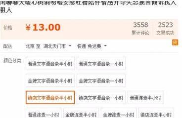

农村不起眼的偏门暴利生意，有商贩专门收摩托车，一辆300元，年赚十万，你信吗？
近些年来，我国社会经济不断发展，农村越来越繁荣了，和过去相比，农村村民的生活方式的确发生了很多变化，这些年，在城里务工的村民赚了钱之后，也陆陆续续回乡盖房，有余钱的村民也会买辆小轿车，因此，在农村地区，“风靡一时”的摩托车也被村民们逐年淘汰。
仔细观察的话，这些年来，不管是在笔者当地还是在其他地方，骑摩托车出行的村民是越来越少，年轻人出门基本都是开着小车，在家里生活的老人，接送小孩或去赶集也是骑着电动车，而摩托车这种交通工具被村民弃用后，基本都存放在家里。
不过，就在这些年，村长发现，农村也来了很多收摩托车的商人，这些商贩开着车在村里四处吆喝，专门收购被弃用的新旧摩托车。
据村长了解得知；这些商贩下乡收购摩托车的价格普遍在三百元上下，有些商贩靠收摩托车，一年的收入就达到了十万，你信吗？
近些年来，农村买小车或外出打工的人越来越多，而之前村民经常使用的摩托车也只能停在院子里，家里的老人也很少开。所以，在不使用或接近报废的情况下，大多数村民都会把闲置的摩托车卖给商贩，而这些商贩收购的价格也是分新旧，如果是报废的摩托车一般都是当废铁收购，能启动的摩托车收购价多半在200-300元之间，好一点的收购价也就在500块左右。
那么问题来了，这些下乡收购摩托车的商贩是如何赚钱的呢？一年能赚十万是真的吗？

在农村，这门生意真的很不起眼，很多人也不会去注意这个行业，如果你长期在农村居住，会发现这些年下乡收购物品的人真的很多，除了收购摩托车之外，村长还见到一些收“旧房梁、旧家具”的小贩，据说；他们收这些东西也是很赚钱。
那么这些专门到农村收购摩托车的商贩是如何赚钱的呢？
村长分析认为，主要是靠以下几个方面赚钱。
第一、是靠卖摩托车的零部件赚钱
捡漏是这个职业赚钱的一个办法，一般情况下，商贩收购旧摩托车都是按照废铁的价格收，每辆车的价格也很低，收回去之后，商贩会看看哪些零部件是好的，然后拆卸下来，转手卖钱，其他的会按照废铁处理。
第二、是靠翻修翻新二次销售赚钱
在农村，有些摩托车被弃用后，就一直停放在院子里，经过风吹雨淋，车子也生锈掉色，但这些摩托车往往都是好的，有些商贩收回去之后，会检查摩托车的使用情况，如果有些零部件坏了也会翻修一下，进行二次销售。如果想卖高价，商贩们也会把外壳翻新，这样也能多赚一点。而这些商贩往往都是低价收，高价卖，中间的利润也很可观，因此，在近些年，才有那么多人去农村收购摩托车。
对于商贩一年能不能赚十万，村长认为还是有可能，刚开始做这门生意的人也不多，的确有些人赚到了钱，但在后面的几年，做这门生意的人越来越多了，再加上现在的价格比较透明，竞争越来越大，要像之前那样赚钱是不可能的，按照现在的行情和消费需求，一年能赚几万已经很不错了，你觉得呢？
结语：
以上就是村长为大家分享的内容：“在农村，有商贩专门收购摩托车，一辆300元，年赚十万，你信吗？”，对此，大家怎么看？欢迎在评论区留言、交流。